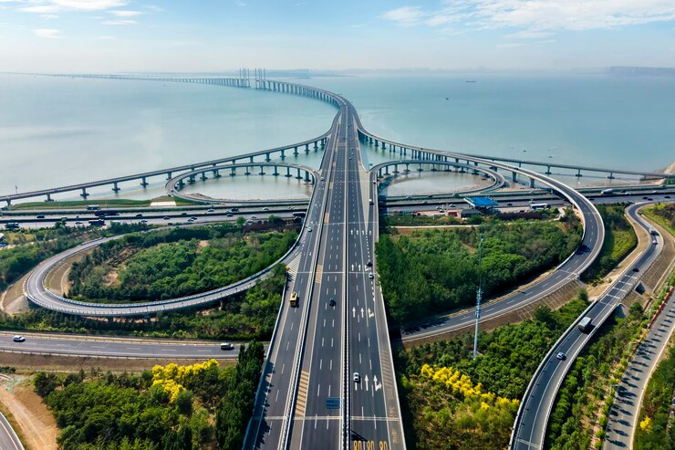

Several bridges are notable for their high level of achievement, but still don’t qualify individually as a great bridge. These include the Verrazano Narrows Bridge, for its span, and the Bosphorus Bridge I, built between two continents. Several cable-stayed bridges should be noted for their long spans, including the Normandy, Sutong, Stonecutters, Maracaibo Bay, Rion Antirion, Millau Viaduct, Sunniberg, and Russky Island Bridges. This structural system, in just 50 years, reached free-spans exceeding 3,280 feet. It is still too soon to tell if any of these bridges will be added to the group of Great Bridges.
TOP 3 MODERN GREAT BRIDGES

Form, aesthetic, and highly complex engineering principles combine in this bridge. It is a fantastic example of computer design programs' early capabilities, utilising incredibly intricate mathematical algorithms. Henderson Waves bridge was built in 2008. Technology has come a very long way in the 13 years since its construction. Imagine the possibilities available to engineers in the present day.

The Gateshead Millennium Bridge is famous for being the only tilting bridge in the world. To see the bridge rise to allow boats to pass is incredibly impressive, instead of opening in the middle as most bridges do. Gateshead Millennium Bridge is a perfect example of how letting go of tradition can lead to something extraordinary. Check out a video here to see it in action.

The Hangzhou Bay Bridge is nearly 40 kilometres long. To put it into perspective, that is approximately the distance from Perth to Rockingham. Many were skeptical that such a long transoceanic bridge was possible. Over 600 engineers were involved in the bridge's design and building process. The Hangzhou Bay Bridge is the definition of a feat of engineering and proves the power of teamwork.

Characteristics
Width: 79 metres (260 feet) (Avg.)
Height: 30 metres (100 feet) (Avg.)
No. of spans: 2000
History
Designer: China Road and Bridge Corporation (CRBC)
Construction start: ca. 2006
Construction end: 2010
Construction cost: US$8.5 Billion
Opened: 30 June 2011
The bridge is located on the rail line between Shanghai and Nanjing in Jiangsu province. It is in the Yangtze River Delta where the geography is characterised by lowland rice paddies, canals, rivers, and lakes. The bridge runs roughly parallel to the Yangtze River, about 8 to 80 km (5 to 50 mi) south of the river. It passes through the northern edges of population centers (from west to east) beginning in Danyang, Changzhou, Wuxi, Suzhou, and ending in Kunshan. There is a 9-kilometre long (5.6 mi) section over open water across Yangcheng Lake in Suzhou.

Characteristics
No. of spans: 26.4
History
Construction end: 2008
Opened: 6 February 2010
The Weinan Weihe Grand Bridge is a part of the Zhengzhou–Xi'an High-Speed Railway which connects Zhengzhou and Xi'an, in China. The 79.732-kilometer (49.543 mi)-long bridge crosses the Wei River twice, as well as many other rivers, such as the Ling river, Luofu river, Xi river, Shi Di river and many more, highways and railways. Upon its completion, it was the longest bridge in the world, but surpassed by two new bridges on Beijing–Shanghai High-Speed Railway that completed in 2010. The bridge was completed in 2008 but the railway line itself did not open until February 6, 2010.It is now the 3rd longest bridge in the world. During construction of the Weinan Weihe Grand Bridge, there were at least 10,000 workers 2,300,000 cubic meters of concrete and 45,000 tons of steel.

Characteristics
Length: 35.673 km (22 mi)
Longest span: 448 m (1,470 ft)
History
Design: Cable-stayed bridge
Construction start: June 8, 2003
Construction end: June 14, 2007
Opened: May 1, 2008
The bridge across the Hangzhou Bay was the subject of various feasibility studies for over a decade before the final plans were approved in 2003. An earlier plan placed the bridge further east, closer to the mouth of the bay, which provided an even shorter travel distance between Ningbo and Shanghai. Under this plan, the bridge would begin in the north from Jinshan, a suburb of Shanghai. The Zhejiang Provincial Government was forced to build the bridge further to the west on entirely Zhejiang territory. The Hangzhou Bay Bridge connects Cixi, a local-level city that is part of Ningbo Municipality, with Haiyan, a county in Jiaxing Municipality.

Characteristics
Longest span: 467 m (1,532 ft)
Height: 359 m (1,178 ft)
No. of spans: 17
History
Designer: Konkan Railway, Afcons Infrastructure & DRDO
Construction start: Nov 2018
Construction end: Jun 2022
Construction cost: USD 190 million
Opening: December 2022
The Chenab Rail Bridge is a steel and concrete arch bridge between Bakkal and Kauri and just 42 km from main Reasi town in the Reasi district of Jammu and Kashmir, India. The bridge spans the Chenab River at a height of 359 m (1,178 ft) above the river, making it the world's highest rail bridge. In November 2017, the base supports were declared completed allowing for the start of the construction of the main arch. The bridge was fully completed and was inaugurated in August 2022.

Characteristics
Longest span: 1,408 m (4,619 ft)
History
Construction Start: 2013
Construction Cost: 4.5 billion TRY
Design: Hybrid cable-stayed, suspension bridge
The Yavuz Sultan Selim Bridge (Turkish: Yavuz Sultan Selim Köprüsü) is a bridge for rail and motor vehicle transit over the Bosphorus strait, to the north of two existing suspension bridges in Istanbul, Turkey. It was initially named the Third Bosphorus Bridge (with 15 July Martyrs Bridge being the First Bosphorus Bridge and Fatih Sultan Mehmet Bridge the Second Bosphorus Bridge). The bridge is located near the Black Sea entrance of the Bosphorus strait, between Garipçe in Sarıyer on the European side and Poyrazköy in Beykoz on the Asian side. The bridge was opened to traffic on 26 August 2016. At 322 m (1,056 ft), the bridge is one of the tallest bridges in the world. It is the fifth-tallest bridge in the world of any type. The bridge is also one of the world's widest suspension bridges, at 58.4 metres (192 ft) wide.

Characteristics
Total length: 3,100 meters (10,200 ft)
Longest span: 1,104 meters (3,622 ft)
History
Design: Cable-stayed bridge
Construction cost: $1.1 billion USD (estimated)
Construction start: 2008
Construction end: July 2012
Opened: July 2012
The Russky Bridge (Russian: Русский мост, Russian Bridge) is a cable-stayed bridge in Vladivostok, Primorsky Krai, Russia. The bridge connects the Russky Island and the Muravyov-Amursky Peninsula sections of the city across the Eastern Bosphorus strait, and with a central span of 1,104 metres (3,622 feet) it is the longest cable-stayed bridge in the world. The Russky Bridge was originally built to serve the 2012 Asia-Pacific Economic Cooperation conference hosted at the Far Eastern Federal University campus on Russky Island. It was completed in July 2012 and opened by Prime Minister Dmitry Medvedev, and on September 3, 2012, the bridge was officially given its name.

Characteristics
Width: 19.8 m (65 ft)
Length: 1,124 m (3,688 ft)
Longest span: 520 m (1,710 ft)
History
Designer: Cable-stayed bridge
Construction start: 21 February 2008
Construction end: (inaugurated) 5 January 2012
Construction cost: 18 billion peso (US$1.44 billion)
Opened: late 2013
The Baluarte Bridge (Spanish: Puente Baluarte), officially the Baluarte Bicentennial Bridge (Spanish: Puente Baluarte Bicentenario), is a cable-stayed bridge in Mexico. It is located between the municipalities of Concordia in Sinaloa and Pueblo Nuevo in Durango, along the Durango–Mazatlán highway, Mexico 40D. The bridge has a total length of 1,124 m (3,688 ft), with a central cable-stayed span of 520 m (1,710 ft). With the road deck at 403 m (1,322 ft) above the valley below, the Baluarte Bridge is the third-highest cable-stayed bridge in the world, the seventh-highest bridge overall and the highest bridge in the Americas.

Characteristics
No. of spans: 378m
History
Construction end: 2013
Opened: 2015
The Karun 4 (Karun IV) Arch Bridge is an arch deck bridge in Lordegan, Chaharmahal and Bakhtiari province, Iran. It has a 378 metres (1,240 ft) arch span. This arch deck bridge has an orthotropic deck system with 11.8 metres (39 ft) total width which incorporates a two-way carriageway and a walkway at each side. It weighs 3875 tons and is constructed of 1212 pieces. The bridge construction finished in 2013 and opened to traffic in 2015. The bridge flies over Karun-4 Dam Reservoir in Chaharmahal and Bakhtiari, Iran. The deck is located 245 metres (804 ft) above the reservoir's bed and 70 metres (230 ft) above the N.W.L. Access to the bridge is possible by driving through a couple of tunnels with 550 metres (1,800 ft) and 450 metres (1,480 ft) length at two sides of bridge. It has the longest arch bridge span in the Middle East and is the 49th longest arch bridge in the world.

Characteristics
Length: 1,596 m (5,236 ft)
Longest span: 1,018 m (3,340 ft)
History
Designer: Dissing+Weitling
Construction start: 27 April 2004
Construction Cost: HK$2.76 billion
Construction end: 7 April 2009
Opened: 20 December 2009
Stonecutters Bridge is a high level cable-stayed bridge spanning the Rambler Channel in Hong Kong, connecting Nam Wan Kok, Tsing Yi to Stonecutters Island. The bridge deck was completed on 7 April 2009, and opened to traffic on 20 December that year. The bridge was the second-longest cable-stayed span in the world at the time of its completion. The approaches at Tsing Yi and Stonecutters Island are located near Container Terminal 9 and Container Terminal 8, respectively. The Stonecutters Bridge won the 2010 Supreme Award at the annual Structural Awards presented by the Institution of Structural Engineers, United Kingdom.

Characteristics
Material: Sandstone ashlar, Roman concrete
Total length Ca. 500 m
Longest span: 9 m
No. of spans: 40+
History
Designer: Roman engineers
Construction start: Ca. 260–270 AD
Collapsed: 1885
The Band-e Kaisar (Persian: بند قیصر, "Caesar's dam"), Pol-e Kaisar ("Caesar's bridge"), Bridge of Valerian or Shadirwan was an ancient arch bridge in Shushtar, Iran, and the first in the country to combine it with a dam. Built by the Sassanids, using Roman prisoners of war as workforce, in the 3rd century AD on Sassanid order, it was also the most eastern example of Roman bridge design and Roman dam, lying deep in Persian territory. Its dual-purpose design exerted a profound influence on Iranian civil engineering and was instrumental in developing Sassanid water management techniques.

Characteristics
No. of spans: 1
Longest span: Ca. 1 m
Design: Corbel arch bridge
Total length: 22 m
Width: 2.50 m
Height: 4 m
Material: Cyclopean stone
History
Opened: Ca. 1300-1190 BC
The Arkadiko Bridge or Kazarma Bridge is a Mycenaean bridge near the modern road from Tiryns to Epidauros on the Peloponnese, Greece. Dating to the Greek Bronze Age, it is one of the oldest arch bridges still in existence and use today and the oldest preserved bridge in Europe. The corbel arch bridge belonged in Mycenaean times to a highway between the two cities, which formed part of a wider military road network. It is made in the typical Mycenaean manner of Cyclopean stones. The sophisticated layout of the bridge and the road indicate that they were specifically constructed use by chariots. Built in the late Late Helladic III (ca. 1300–1190 BC).

Characteristics
Material: Masonry
Length: 135 m (443 ft)
No. of spans: 5
Height: 7 m (23 ft)
History
Designer: Gian Lorenzo Bernini
Was built in: 134 AD
Ponte Sant'Angelo, originally the Aelian Bridge or Pons Aelius, is a Roman bridge in Rome, Italy, completed in 134 AD by Roman Emperor Hadrian (Publius Aelius Hadrianus), to span the Tiber from the city centre to his newly constructed mausoleum, now the towering Castel Sant'Angelo. The bridge is faced with travertine marble and spans the Tiber with five arches, three of which are Roman; it was approached by means of a ramp from the river. The bridge is now solely pedestrian and provides a scenic view of Castel Sant'Angelo. It links the rioni of Ponte (which was named after the bridge itself), and Borgo, to whom the bridge administratively belongs.
OUR GALLERY CONTAINS ALL THE PICTURE OF BRIDGES GIVEN IN OUR WEBSITE


We would love to hear your thoughts, concerns or prolems with anything so we can improve!
This information is provided for thoes who seek the knowledgement of bridges to get some ideas.
READ LESS